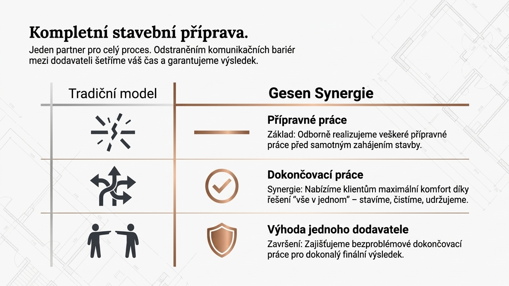

Před další etapou
Kompletní stavební příprava
Pomáháme s přípravnými a podpůrnými činnostmi, které drží objekt v použitelné kondici a usnadňují návaznost dalších profesí. Prakticky, čistě a bez chaosu.
- příprava prostoru před dalším pracovním krokem,
- pomocné práce a provozní zajištění v zázemí stavby,
- udržení pořádku v průběhu etapizované realizace.
Vhodné tam, kde je potřeba, aby se projekt posouval plynule, přehledně a bez zbytečných prostojů.